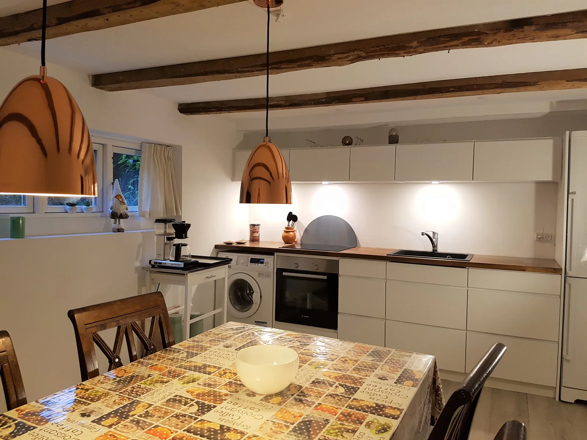

At Køge Guesthouse you have plenty of dining opportunities within a ten-minute walk. Netto is a five-minute walk away, about 300 metres from the guesthouse.
Further down the same street you will find a bakery, a fresh fish shop and other shops, leading to the Central Square of Køge, 1.5 km away.
Head east towards the beach for restaurants by the marina, or north to Ølby Center — 1.4 km by bicycle and 1.9 km by car — for a shopping mall and several supermarkets.

Dining out
Danes eat around 6pm and restaurant kitchens close rather early, often around 9.30–10pm. There are plenty of restaurants in Køge within 1–2 km.
Restaurants and cafés in Køge
Restaurant listings on Tripadvisor
If you return after 10pm, please stay quiet and avoid waking other guests or neighbours.
Dining in-house
You are welcome to cook upstairs. Please leave all common areas as you received them: clean and orderly. Wash your dishes or leave them in the dishwasher, so it is pleasant for everyone to arrive.
Our house assistant takes care of the bedrooms and bathrooms daily. The extra shared space comes with do-it-yourself service.
Supermarkets & shops
| Shop | Address | Open until |
|---|---|---|
| Netto | Nørre Blvd. 131 | 00.00 |
| REMA 1000 | Ølbycenter 31 | 21.00 |
| Irma | Nørre Blvd. 16 | 20.00 |
| Føtex Ølby Centret | Ølbycenter 24 | 21.00 |
| ALDI Køge | Ølbycenter 3 | 20.00 |
| Ølby Bazar ApS | Ølbycenter 17 | — |
| LIDL | Ølbycenter 4 | 21.00 |
| Kvickly Køge | Vestergade 25 A | 20.00 |
| Netto Ølby | Ølbycenter 6 | 22.00 |
| Candy Shop | Nørre Blvd. 45 | 20.00 |